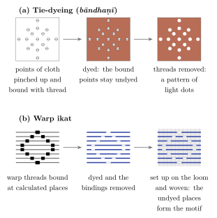
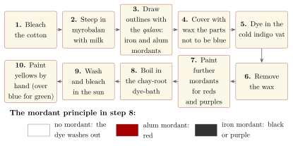
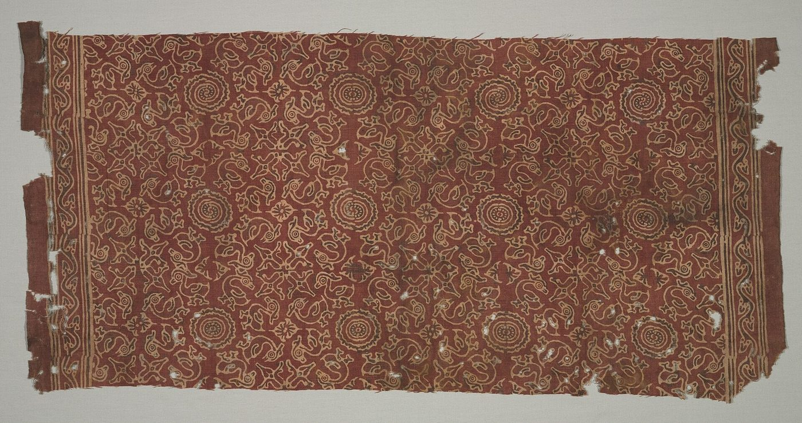
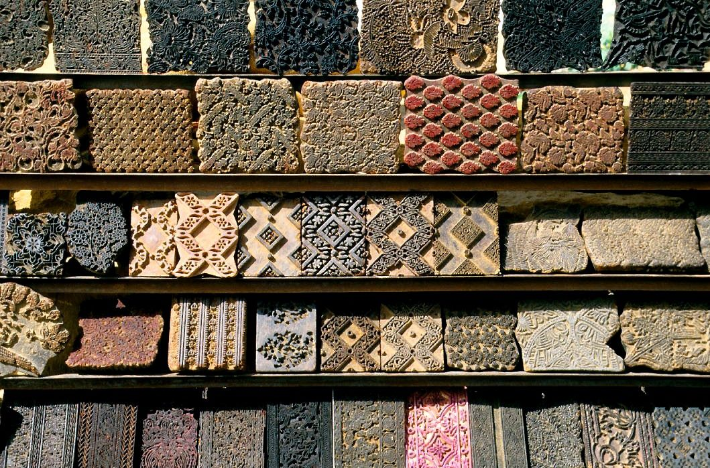
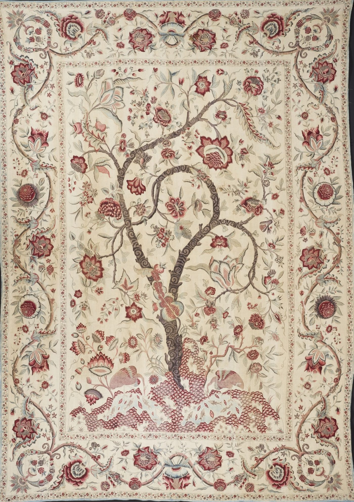

Chapter 5: Raṅga: Dyeing, Printing and the Chintz Trade¶
The reputation of Indian cottons in world trade rested above all on their colours. Indian dyers could fix bright reds, deep blues and fast blacks on cotton, a fibre that resists most dyes, and they could combine them in complex printed and painted patterns that survived repeated washing. Europeans, who until the eighteenth century could not do this, called these cloths “chintz” and “calico” and paid high prices for them. Mattiebelle Gittinger’s phrase “master dyers to the world” sums up the achievement (Gittinger 1982). This chapter describes the dyes and mordants, the main techniques of resist-dyeing, printing and painting, the principal centres, and the global trade in Indian printed cottons.
5.1 Dyes and Mordants¶
5.1.1 The Mordant Principle¶
Many natural dyes, including madder and its relatives, do not bind well to cotton on their own. They require a mordant, usually a metal salt, which combines with both fibre and dye to form an insoluble coloured complex. With the same red dye, an aluminium mordant (alum, Hindi phiṭkarī) gives red, an iron mordant gives purple to black, and a mixture of the two gives browns and violets. Cotton was first scoured and then treated with a tannin, usually a solution of myrobalan fruit (harḍa, Terminalia chebula), sometimes with milk, which helps the mordants to take. The mordants were then printed or painted on the cloth where colour was wanted, and the whole cloth was boiled in a dye-bath; the dye fixed only where the mordant had been applied, and the rest washed out in subsequent washing and bleaching in the sun.
Iron black was made by fermenting scrap iron with jaggery or other sugars and water for several weeks; the resulting iron acetate solution (Hindi syāhī, in Andhra kasīmī) was used both as a black on tannin-treated cotton and as a mordant. Dyers distinguished fast colours (pakkā raṅg) from fugitive ones (kaccā raṅg).
5.1.2 Reds¶
The principal red dyes were the roots of plants of the madder family. Indian madder (mañjiṣṭhā, Rubia cordifolia) was used across the north. On the Coromandel coast the root of the chay plant (Oldenlandia umbellata), which contains alizarin, gave the famous reds of south Indian chintz; and the root of āl (Morinda) was used in central and western India. Lac dye (from the same insect that gives shellac, Chapter 10) was used for silk and wool, as was sappanwood. Safflower (kusumbha) gave a fugitive pink and red, much used for festive and bridal cloth.
5.1.3 Blue: Indigo¶
Indigo (nīlī, Indigofera tinctoria) is the oldest and most famous Indian dye; its English name comes, through Latin and Greek, from the word for “Indian”. The leaves are steeped in water and fermented; the liquid is beaten to oxidise it, and the blue pigment settles out and is pressed into cakes. Because indigo is insoluble, dyeing requires a vat in which the dye is reduced, by fermentation in an alkaline bath, to a soluble yellowish form; cloth dipped in the vat turns blue as it is taken out and exposed to the air. Repeated dips give deeper blues. Indigo needs no mordant, and was combined with red and yellow dyes to give purples, greens and blacks. It was exported from Gujarat and the Indus region to western Asia and Europe from antiquity, and in the colonial period became a plantation crop in Bengal and Bihar (Chapter 14). In the seventeenth century, the indigo of Bayana near Agra and of Sarkhej near Ahmedabad was among the most important commodities bought by the Dutch and English companies, and the merchants of Gujarat, Agra and Lahore competed to supply it.
5.1.4 Colour in Language and Literature¶
Sanskrit uses the same word, rāga, for colour, dye and passion, and poets played on the connection. The red of safflower (kusumbha), bright but quick to fade, was a familiar image of a passion that does not last, as against the fast red of madder, an image of lasting love. The colour of the lac dye with which women reddened their feet, the saffron of the renouncer’s robe and the indigo of Kṛṣṇa’s complexion all carried rich associations in poetry and devotion. In the songs of the bhakti poets, dyeing could also be an image of the soul’s transformation: the devotee asks to be dyed in the colour of the Lord, a colour that will not wash out.
5.1.5 Yellows and Other Colours¶
Turmeric (haridrā) gives a bright but fugitive yellow; more durable yellows were obtained from pomegranate rind (dāḍima), from the flowers of palāśa (Butea monosperma) and harsiṅgār (Nyctanthes arbor-tristis), from kamala (Mallotus philippensis) and other plants. Greens were usually made by dyeing yellow over blue. Flowers of dhāvaḍī (Woodfordia fruticosa) were added to red dye-baths in the south. Gillow and Barnard give a practical account of the dyes used in the main surviving traditions (Gillow and Barnard 1991).
5.1.6 The Chemistry in Modern Terms¶
Modern chemistry explains what Indian dyers achieved by experience. The colouring substances of madder and chay root are anthraquinones, chiefly alizarin and purpurin, which form insoluble coloured complexes (“lakes”) with metal ions; the colour of the complex depends on the metal, aluminium giving red, iron purple or black. Tannins from myrobalan, pomegranate or bark bind to cellulose and to metal ions, helping the mordant to fix on cotton, and themselves form black compounds with iron. Indigo is a vat dye: its insoluble blue pigment, indigotin, is reduced in an alkaline vat to a soluble form that penetrates the fibre and is re-oxidised by air to the insoluble blue. The bleaching of cloth in the sun after dyeing removed the excess dye from unmordanted areas and brightened the ground. Dyers did not need these explanations to control their processes, which they judged by colour, smell, taste and the behaviour of the bath; but the explanations show why their methods produced fast colours where European dyers long failed.
5.2 Techniques¶
Indian dyers combined several methods of producing patterns:
- Mordant printing and painting
- Mordants applied with wooden blocks or a pen (qalam) before the cloth is boiled in the dye-bath.
- Resist-dyeing
- A paste of mud, gum, lime or wax applied to areas that are to remain undyed, usually before dipping in indigo, which is applied cold.
- Tie-dyeing
- Areas of cloth tied tightly with thread (bāndhaṇī) or rolled and bound (laharīyā) so that the dye cannot reach them (Figure 5.1).
- Ikat
- Resist-tying of yarn before weaving (Chapter 4 and Figure 5.1).
- Direct printing
- Pigments or dyes with thickeners printed directly; common for fugitive colours and, in modern times, for synthetic dyes and pigments.

The French Jesuit Gaston-Laurent Cœurdoux, writing from Pondicherry in the 1740s, and the naval officer Antoine de Beaulieu, who had samples of each stage of chintz-making prepared at Pondicherry in the 1730s, sent detailed accounts of the south Indian process to France. Their documents, published and analysed by John Irwin and Katharine Brett, describe a process of more than a dozen stages: bleaching, treatment with myrobalan and milk, outlining in iron black and red mordant with a pen, waxing areas to be reserved, dyeing in indigo, removing the wax, painting further mordants, dyeing in chay root, bleaching and finally painting yellows by hand (Irwin and Brett 1970). Figure 5.2 sets out the sequence. The process took weeks, and every stage required judgement.

5.3 Block Printing and Painting Traditions¶
5.3.1 The Evidence from Egypt¶
The earliest surviving Indian printed textiles come from Egypt, where dry conditions preserved thousands of fragments of Indian block-printed and resist-dyed cottons excavated at Fustat (Old Cairo), Quseir al-Qadim and other Red Sea sites. Ruth Barnes’s study of the large collection in the Ashmolean Museum, Oxford, showed by radiocarbon dating that most of these cloths date from the thirteenth to the fifteenth century, with some as early as the tenth, and that they were made mainly in Gujarat for the Red Sea trade (Barnes 1997). Their designs (geese, lotuses, rosettes and geometric patterns; Figure 5.3) are related to those found on later Indian textiles exported to Southeast Asia (Guy 1998).


5.3.2 Gujarat and Sindh: Ajrakh¶
Ajrakh is a resist- and mordant-printed cotton made in Sindh, Kutch and western Rajasthan, worn as shawls, turbans and lungis by pastoral communities. Its geometric designs in indigo and madder red, with black and white, are printed on both sides of the cloth with carved blocks, using a sequence of resists and mordants that may take two weeks or more. The printers belong mainly to Muslim Khatrī families; in Kutch, many moved to the new village of Ajrakhpur after the earthquake of 2001. The name (Sindhi ajrak) is often derived from the Arabic and Persian azraq, “blue”, though this etymology is uncertain.
5.3.3 Rajasthan: Sanganer and Bagru¶
Near Jaipur, the printing villages of Sanganer and Bagru flourished from the eighteenth century under the patronage of the Jaipur court and of merchants. They are worked mainly by the Chhīpā (printer) community. Sanganer is known for fine floral sprigs on white grounds; Bagru for prints on grounds dyed cream with myrobalan, in red and black, and for the dābū mud-resist (a paste of clay, gum and other materials) used with indigo. Both are registered as Geographical Indications. The Jaipur firm Anokhi and its Museum of Hand Printing at Amber have done much to sustain and document the Sanganer tradition (Chapter 15).
5.3.4 Block-Makers¶
Printing depends on the carvers of wooden blocks, a separate craft (Figure 5.4). Blocks are cut from close-grained woods such as sheesham or teak, on which the design is drawn or pasted, and carved with fine chisels and drills; a set for a single multicoloured design may need separate blocks for the outline, each colour and the resist. Pethapur near Gandhinagar in Gujarat has long been the most famous centre of block-carving, supplying printers across western India and abroad, and Farrukhabad and Jaipur also have block-makers. Old blocks preserve design traditions over generations, and collections of them are now kept by museums and printers’ families as archives of pattern.

_06.jpg){kind=link}
5.3.5 Madhya Pradesh: Bagh¶
At Bagh in Dhar district, Khatrī printers produce red and black prints with mordants and natural dyes, washed in the local river. The Bagh print is also a registered Geographical Indication.
5.3.6 Andhra Pradesh: Kalamkari¶
The word kalamkārī (Persian qalamkārī, “pen-work”) refers to two related traditions. At Srikalahasti, near Tirupati, cloths are painted by hand with a bamboo pen (qalam) carrying iron black and mordants, to make large narrative hangings for temples and processions, with scenes from the epics and Purāṇas. Among the most striking Srikalahasti works are the large temple cloths for the processional cars and halls of temples, divided into registers of scenes like a painted scroll and labelled in Telugu; the painter draws the figures freehand from long memory of the conventions, and the cloth passes through repeated cycles of mordanting, dyeing and washing in running water. The craft declined in the early twentieth century and was revived in the 1950s and 1960s with the support of the All India Handicrafts Board. Related painted temple cloths, the mātānī pachedī of the Vāghrī community of Ahmedabad, are made as portable shrines for the mother goddess by a community long excluded from temples. At Machilipatnam and Pedana on the coast, blocks are used for the outlines and mordants, with details painted by hand. Machilipatnam was a major port of the Golconda sultanate, and its painted and printed cottons were made for Persian, Southeast Asian and later European markets.
5.3.7 Tie-Dyeing¶
Bāndhaṇī (from Sanskrit bandh-, “to bind”) is the tie-dye of Gujarat and Rajasthan. Tiny points of cloth are pinched up and tightly bound with thread, often following a design marked on the cloth with fugitive colour; when the cloth is dyed, the bound points remain undyed. Jamnagar and Bhuj in Gujarat, and Jaipur, Jodhpur and other towns in Rajasthan, are major centres. Gujarati bridal saris such as the gharcoḷā, with a grid of gold-thread squares filled with tie-dyed motifs, and the pānetar are made in this technique. Laharīyā (“waves”), made by rolling the cloth diagonally and binding it at intervals, gives the striped and zig-zag patterns of Rajasthani turbans and saris.
5.4 Indian Textiles in Southeast and East Asia¶
Long before Europeans bought Indian chintz, Indian printed, painted and woven cottons and silks were the main currency of the spice trade in the Indonesian archipelago. Merchants from Gujarat and the Coromandel coast exchanged cloth for cloves, nutmeg and pepper, and Indian textiles were distributed through the islands to be used as clothing, as ceremonial hangings and as gifts and heirlooms. In some communities of eastern Indonesia, such as the Toraja of Sulawesi, Indian cloths were preserved for centuries as sacred heirlooms, and radiocarbon dating has shown that some of these heirloom textiles were made in Gujarat as early as the fourteenth century (Guy 1998; Barnes 2005).
Indian makers produced cloths specifically designed for these markets: double-ikat paṭolā for Indonesian courts, block-printed cloths with patterns favoured in particular islands, and painted cottons for the court of Siam made to Thai designs sent from Ayutthaya. In Japan, Indian chintz, imported through the Dutch at Nagasaki, was called sarasa; it was prized for tea ceremony accessories, and Japanese printers imitated it. Indian dyers and painters thus learned to work to the tastes of distant customers long before European demand put the same skill to new use.
5.4.1 Cloth, Rank and Ritual¶
In Southeast Asia, Indian cloth was not simply clothing. John Guy’s study of the trade shows that it entered the political and ritual life of the societies that bought it (Guy 1998). In the courts of Java, Sumatra and the Malay peninsula, the double-ikat silk paṭolā of Gujarat, known in Malay and Javanese as cinde or cindai, was worn by rulers and their households and given as a mark of favour. Some of its patterns were treated as the privilege of royalty. At the Siamese court, painted cottons made on the Coromandel coast to Thai designs were distributed among the nobility. Which patterns a person might wear was linked to rank, so that cloth ordered from India served the Thai state as a visible sign of hierarchy. In the villages of eastern Indonesia, Indian cloths were kept for generations in heirloom chests and brought out for funerals, marriages and the rites of the house. The Toraja of Sulawesi call such old cloths maa’, and they hang them at ceremonies as objects of power. Many of the dated Indian trade textiles now in museums were preserved in this way, long after cloths of the same kind had disappeared in India.
5.4.2 Patterns for Particular Islands¶
Indian makers learned the visual language of these markets. Cloths for Indonesia often carry a border of tall triangles, known in Indonesian as tumpal, at their ends. They also have layouts suited to local ways of wearing, as a waist-cloth, a shoulder-cloth or a long hanging. Gujarati printers made cheaper block-printed and resist-dyed imitations of paṭolā patterns for buyers who could not afford the woven silk, so that the same design reached different social levels in different techniques. On the Coromandel coast, painters produced large cotton hangings with processions, figures and animals for Indonesian buyers, alongside the chintz they made for Europe. The Gujarati and Tamil merchants who carried these cloths, and the ports through which they passed, are described in Volume 19.
5.4.3 Imitation and Exchange¶
The influence also ran the other way. Weavers in several parts of Indonesia adapted paṭolā designs to their own warp- and weft-ikat techniques. Some Javanese batik patterns are thought to derive from Indian prototypes, and in the nineteenth century, when Indian imports declined, locally made cloths took over many of the roles of the Indian ones. In Japan, imitation sarasa was printed with stencils and wood blocks from the eighteenth century, and pattern books of Indian and imitation cloths were compiled. Indian cloth thus became part of the textile traditions of the places that bought it. The heirloom cloths of Sulawesi and the cinde patterns of Java belong to Indonesian textile heritage as much as to India’s.
5.5 The Chintz Trade¶
5.5.1 Calico and Chintz in Europe¶
Indian cottons had reached Europe in small quantities through the Levant for centuries, but trade on a large scale began only when the Dutch and English East India Companies began to import them in the seventeenth century. The English word “calico” derives from Calicut, and “chintz” from Hindi chīṇṭ, spotted or variegated cloth. At first the Companies imported plain and striped cloth; from the 1660s and 1670s printed and painted cottons became a fashion in Europe for clothing and furnishings. The Companies sent European patterns to India to be adapted, and Indian painters produced the “tree of life” bed-covers and wall-hangings (palampores; Figure 5.5) that blended Indian, Persian, Chinese and European motifs (Irwin and Brett 1970; Crill 2008).


5.5.2 Production on the Coromandel Coast¶
The Coromandel coast, from Masulipatnam (Machilipatnam) in the north to Pulicat, Madras, Pondicherry and Nagapattinam in the south, was the main source of the painted chintz exported to Southeast Asia and Europe in the seventeenth and eighteenth centuries. Production involved many specialists: cotton growers, spinners, weavers, washermen who bleached the cloth, qalam painters who drew the outlines and applied the mordants, dyers, and the growers of chay root, which was found wild and cultivated in sandy soils along the coast. Merchants and brokers, Indian and European, coordinated the work through advances (Gittinger 1982). The Dutch bought much of their chintz in the hinterland of Pulicat, their headquarters on the coast, and the English and French around Madras and Pondicherry. Wars, famines and the shift of European demand to cheaper printed goods brought decline in the later eighteenth century.
5.5.3 The Calico Craze¶
Between the 1660s and the 1690s Indian cottons became a craze in England and the Netherlands. The English Company’s imports of Indian piece-goods rose steeply, and in some years of the 1680s exceeded a million pieces (Chaudhuri 1978). Beverly Lemire has shown what made the cloth attractive to English buyers (Lemire 1991). It was light, washable and colour-fast, so that it could be laundered without losing its pattern, as most European printed and dyed cloth could not. It was also cheap enough to reach far beyond the rich. Calicoes and chintzes went into bed-hangings and quilts, linings, aprons, handkerchiefs and petticoats, and then into gowns. The loose morning-gown called a “banyan”, after the Gujarati merchant (vāṇiyā), was a fashion among English gentlemen. Through pedlars, shopkeepers and the second-hand trade, printed cotton reached servants and the families of tradesmen. Lemire argues that it accustomed a wide public to fashions that changed from season to season, and so helped to create the consumer market that the later English cotton industry served.
The craze provoked a reaction from those whose livelihoods it threatened. In London in the summer of 1719 silk-weavers from Spitalfields attacked women wearing calico in the streets and tore their gowns, and a pamphlet war set the “calico madams” against the honest wool and silk manufacturers of England. The legislation that followed is described below. Its gaps mattered as much as its prohibitions. Fustian, with a linen warp and a cotton weft, was not covered by the ban on printed cottons, and an Act of 1736 confirmed that printed linen-and-cotton cloth was lawful. English printers therefore learned their trade on mixed fabrics for the home market and on Indian calicoes for re-export, and English spinners and weavers began to produce the cotton yarn and cloth that the printers needed (Lemire 1991; Riello 2013). In France, where the ban of 1686 was enforced with severe penalties, Indian and imitation indiennes were nevertheless smuggled and worn throughout the period of prohibition. When it ended in 1759, printworks such as that founded by Christophe-Philippe Oberkampf at Jouy-en-Josas in 1760 quickly took up the trade.
5.5.4 Protection and Imitation¶
The popularity of Indian cottons provoked protests from wool and silk manufacturers. France prohibited the import, manufacture and wearing of printed cottons in 1686, a ban that lasted until 1759. In England, an Act of 1700 prohibited the import of printed and painted calicoes from Asia for domestic use, and the Calico Act of 1721 prohibited the wearing and use of most printed cottons altogether. These measures did not stop the trade; Indian cloth continued to be imported and re-exported to Africa and the Americas, where it was a staple of the Atlantic trade, including the trade in enslaved Africans (Riello 2013).
Giorgio Riello and Prasannan Parthasarathi have argued that the competition of Indian cottons was a major stimulus to the European cotton industry: Europeans set out to imitate Indian products, learned mordant dyeing and printing from Indian methods, and mechanised spinning and weaving in order to compete with Indian cloth on price and quality (Riello 2013; Parthasarathi 2011). This is an important argument about the origins of the Industrial Revolution, though other historians give more weight to factors within Europe; it should be presented as a thesis of current scholarship rather than an established fact.
5.5.5 The Paisley Motif¶
The teardrop or cone-shaped motif known in Persian as boteh and in Hindi and Urdu as būṭā or kairī (“mango”) became, on Kashmir shawls, one of the most influential designs in the history of textiles. When European manufacturers imitated Kashmir shawls in the early nineteenth century, the town of Paisley in Scotland became so important a centre of production that the motif came to be known in English as “paisley” (Ames 1986).
5.6 Indian Cloth in Africa and the Atlantic World¶
Europe was neither the oldest nor the most demanding overseas market for Indian cloth. Africa, on both its coasts, bought Indian textiles for centuries, and African buyers had firm and changing preferences that Indian weavers and dyers learned to meet. The commercial history of these trades, with their ports, merchants and companies, is told in Volume 19. This section looks at them from the side of the makers: what was made, for whom, and how distant tastes reached the loom and the dye-vat. Table 5.1 lists some of the cloths made for particular markets.
| Market | Cloth | Made in | Evidence and notes |
|---|---|---|---|
| Egypt and the Red Sea | Block-printed and resist-dyed cottons | Gujarat | Fragments from Fustat and Quseir, 10th–15th centuries |
| Indonesia | Paṭolā; printed and painted cottons | Gujarat; Coromandel | Heirloom cloths, some radiocarbon-dated to the 14th century |
| Siam | Painted cottons to Thai designs | Coromandel | Patterns sent from Ayutthaya |
| Japan | Chintz (sarasa) | Coromandel; Gujarat | Imported through the Dutch at Nagasaki |
| East Africa | Indigo-dyed and checked cottons (Swahili kaniki) | Gujarat | Supplied through merchants of Diu and Daman |
| West Africa | “Guinea cloth”, romāls and other checks | Coromandel; Gujarat; Bengal | European company and slaving-voyage cargo lists |
| Senegal | Blue guinées | Pondicherry | A currency of the river gum trade, 19th century |
| Niger Delta | “Real Madras handkerchief” (Kalabari injiri) | Madras region | Prestige and funeral cloth of the Kalabari |
| Europe | Calicoes, chintz, palampores, muslins | Coromandel; Bengal; Gujarat | Company records; surviving furnishings and dress |
5.6.1 East Africa¶
Gujarati cottons reached the Swahili towns of the East African coast long before the Portuguese entered the Indian Ocean (Volume 19). For the eighteenth and early nineteenth centuries, Pedro Machado has reconstructed the trade in detail (Machado 2014). Vāṇiyā merchants of Diu and Daman supplied most of the cloth sold at Mozambique Island, and they financed weavers in Jambusar and other towns of Gujarat to produce it. On the African side, cloth was the main currency in which ivory was bought from the traders of the interior. The cloths were cheap, mostly white, blue-dyed and checked cottons, but they had to be exactly right. African buyers knew the qualities and patterns they wanted, rejected bales that did not match the current fashion, and changed their preferences from one season to the next. The merchants therefore sent precise instructions about colour, width, length and pattern back to Gujarat, and the weavers’ work was shaped by the taste of consumers they never saw.
Dark indigo-dyed cotton, known on the Swahili coast as kaniki, was the staple of this trade. In the nineteenth century Indian cloth met new competitors: unbleached American sheeting, called merikani on the coast, and British printed and dyed goods. Jeremy Prestholdt has shown how East African consumers, through their choices among these cloths, shaped what Indian, American and British manufacturers made for them (Prestholdt 2008).
5.6.2 West Africa and the Atlantic¶
From the seventeenth century, Dutch, English, French and Portuguese traders carried Indian cloth to West Africa. Much of it passed through European ports for re-export. Cotton cloth from Coromandel, Gujarat and Bengal was among the most important goods in the assortments that European ships took to the African coast, and on many English and French slaving voyages of the eighteenth century it was the largest single category of goods exchanged for enslaved people (Riello and Parthasarathi 2009; Riello 2013). The weavers and dyers of Coromandel and Gujarat can have known little of this. It is nonetheless part of the history of their cloth.
Company lists name many cloths made for this trade. “Guinea cloth” was a plain cotton, usually dyed deep blue with indigo, sometimes striped. Romāls (from rūmāl, “handkerchief”) were squares woven in checks. Other names, such as “niccanees”, “chelloes” and “tapseels”, covered striped and checked cloths. West Africa had its own long traditions of cotton weaving, on narrow strip looms, and of indigo dyeing. Indian cloth therefore did not fill an empty market. It succeeded by matching and extending local tastes, above all for deep blues and for red and blue checks, and each stretch of the coast had its own preferences, which a ship’s assortment had to meet if it was to sell.
In the nineteenth century two Indian cloths held special places in West African markets. On the Senegal river, blue cotton guinées from French Pondicherry served as a currency in the trade in gum arabic. Richard Roberts has traced how the fortunes of Pondicherry’s weavers and dyers came to depend on this trade and on French tariff policy, until cheaper machine-made imitations displaced them (Roberts 1992). In the eastern Niger Delta, a checked cotton woven in the Madras region and sold as “real Madras handkerchief” became a cloth of prestige among the Kalabari Ijo. They call it injiri, and wear it and display it at funerals. Kalabari women make a cloth of their own from it, pelete bite (“cut-thread cloth”), by cutting and pulling out threads to create new patterns, a process that Tonye Erekosima and Joanne Eicher have called the “cultural authentication” of an imported cloth (Erekosima and Eicher 1981). Handloom weavers in coastal Andhra and Tamil Nadu continued to make madras checks for this market through the twentieth century.
5.6.3 Made to Order¶
In all these markets Indian textile workers made cloth to order for customers they never met. A weaver in Jambusar or a dyer near Pulicat produced for buyers whose taste reached him only through samples, merchants’ instructions and the occasional rejected bale. The success of Indian cloth in Africa, Southeast Asia and Europe rested on this responsiveness, and on the ability of weavers and dyers to change their products (Chapter 13). When European manufacturers set out to capture these markets, they copied the products that Indian makers had developed for them. In the nineteenth century British mills made imitation “Guinea cloth” and madras checks for Africa, as French and English printers had made imitation chintz for Europe.
The name of one such cloth outlived the trade that made it. “Madras”, the checked cotton of the Coromandel coast, travelled with the Atlantic trade to the Caribbean as well as to West Africa. In the French Antilles, madras head-ties and skirts became part of the dress of Creole women, and they remain an emblem of Martinican and Guadeloupean identity. In the twentieth century, handwoven madras from the same coastal region was sold in North America as a summer fabric, and its tendency to run when washed was turned into a selling point. Through such names, cloth designed by Indian weavers for distant customers became part of the dress and the vocabulary of places that knew little of where it came from.
5.7 The Dyers and Printers¶
Dyeing and printing were, like other crafts, hereditary occupations. In north and west India the main communities include the Raṅgrez (Muslim dyers), the Chhīpā or Chhīmpā (printers, both Hindu and Muslim), the Nīlgar (indigo-dyers) and the Khatrī of Gujarat and Sindh. Some Chhīpā communities claim the Marathi poet-saint Nāmdev, a calico-printer and tailor by birth, as one of their own. In south India, dyeing and painting of cloth were often done by specialists attached to weaving communities. Because dyeing involved foul-smelling vats and the handling of urine, dung and animal products, some dyeing operations were considered polluting, and dyers’ quarters were often placed at the edges of towns, near water.
5.8 Synthetic Dyes and the Decline of Natural Dyeing¶
The discovery of synthetic dyes in Europe transformed dyeing worldwide. W. H. Perkin’s mauve (1856) was followed by synthetic alizarin, made from coal-tar anthracene by Graebe and Liebermann in 1868–69 and manufactured from the early 1870s, and by synthetic indigo, marketed by BASF in 1897. Synthetic alizarin ruined the cultivation of madder in Europe and the market for Indian dye-roots; synthetic indigo brought about the collapse of Indian indigo exports in the early twentieth century (Watt 1908). Indian dyers and printers turned to cheaper synthetic dyes, and many natural-dye techniques survived only in a few places.
Modern Relevance: Natural Dyes and Pollution
Interest in natural dyeing revived from the 1970s, through the work of craft organisations, designers and dyers in Kutch, Rajasthan, Andhra and elsewhere, and natural-dyed textiles now command a premium market. At the same time the modern textile industry, which uses synthetic dyes on a vast scale, has caused severe water pollution in textile towns; the bleaching and dyeing units of Tiruppur in Tamil Nadu, for example, were the subject of prolonged litigation over the pollution of the Noyyal river. Natural dyeing is not automatically “clean”: mordants and iron solutions must also be handled and disposed of carefully.
Further Reading¶
For technique and trade, Gittinger (1982); for the Indian process as recorded by eighteenth-century Europeans, Irwin and Brett (1970); for the textiles of the Calico Museum, Irwin and Hall (1971); for chintz in Europe, Crill (2008); for the Egyptian finds, Barnes (1997); for Indian textiles in the Indian Ocean world, Barnes (2005); for the calico craze in England, Lemire (1991); for East Africa, Machado (2014).